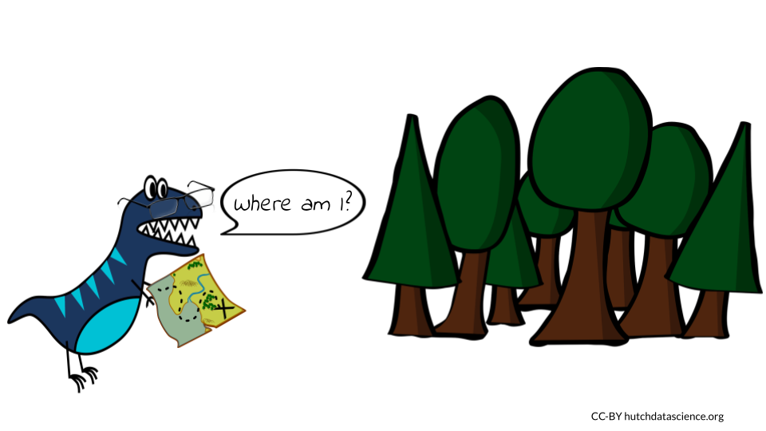

<!DOCTYPE html>
<html lang="" xml:lang="">
<head>

  <meta charset="utf-8" />
  <meta http-equiv="X-UA-Compatible" content="IE=edge" />
  <title>Chapter 18 Understanding Unfamiliar Code | AI for Efficient Programming</title>
  <meta name="description" content="Description about Course/Book." />
  <meta name="generator" content="bookdown 0.24 and GitBook 2.6.7" />

  <meta property="og:title" content="Chapter 18 Understanding Unfamiliar Code | AI for Efficient Programming" />
  <meta property="og:type" content="book" />
  
  
  <meta property="og:description" content="Description about Course/Book." />
  

  <meta name="twitter:card" content="summary" />
  <meta name="twitter:title" content="Chapter 18 Understanding Unfamiliar Code | AI for Efficient Programming" />
  
  <meta name="twitter:description" content="Description about Course/Book." />
  


  <meta name="viewport" content="width=device-width, initial-scale=1" />
  <meta name="apple-mobile-web-app-capable" content="yes" />
  <meta name="apple-mobile-web-app-status-bar-style" content="black" />
  
  <link rel="shortcut icon" href="assets/favicon.ico" type="image/x-icon" />
<link rel="prev" href="video-introduction-to-understanding-unfamiliar-code-with-ai.html"/>
<link rel="next" href="video-understanding-unfamiliar-code-main-points.html"/>
<script src="libs/header-attrs-2.10/header-attrs.js"></script>
<script src="libs/jquery-3.6.0/jquery-3.6.0.min.js"></script>
<script src="https://cdn.jsdelivr.net/npm/fuse.js@6.4.6/dist/fuse.min.js"></script>
<link href="libs/gitbook-2.6.7/css/style.css" rel="stylesheet" />
<link href="libs/gitbook-2.6.7/css/plugin-table.css" rel="stylesheet" />
<link href="libs/gitbook-2.6.7/css/plugin-bookdown.css" rel="stylesheet" />
<link href="libs/gitbook-2.6.7/css/plugin-highlight.css" rel="stylesheet" />
<link href="libs/gitbook-2.6.7/css/plugin-search.css" rel="stylesheet" />
<link href="libs/gitbook-2.6.7/css/plugin-fontsettings.css" rel="stylesheet" />
<link href="libs/gitbook-2.6.7/css/plugin-clipboard.css" rel="stylesheet" />


<link href="libs/anchor-sections-1.0.1/anchor-sections.css" rel="stylesheet" />
<script src="libs/anchor-sections-1.0.1/anchor-sections.js"></script>
  <html>

  <head>
  <title>Chapter 18 Understanding Unfamiliar Code | Title</title>
  </head>

  <body>

  <!-- Global site tag (gtag.js) - Google Analytics -->
  <script async src="https://www.googletagmanager.com/gtag/js?id=G-Q4LSK62HQ2"></script>
  <script>
    window.dataLayer = window.dataLayer || [];
    function gtag(){dataLayer.push(arguments);}
    gtag('js', new Date());

    gtag('config', 'G-Q4LSK62HQ2');
  </script>

  </body>
  </html>


<style type="text/css">
pre > code.sourceCode { white-space: pre; position: relative; }
pre > code.sourceCode > span { display: inline-block; line-height: 1.25; }
pre > code.sourceCode > span:empty { height: 1.2em; }
.sourceCode { overflow: visible; }
code.sourceCode > span { color: inherit; text-decoration: inherit; }
pre.sourceCode { margin: 0; }
@media screen {
div.sourceCode { overflow: auto; }
}
@media print {
pre > code.sourceCode { white-space: pre-wrap; }
pre > code.sourceCode > span { text-indent: -5em; padding-left: 5em; }
}
pre.numberSource code
  { counter-reset: source-line 0; }
pre.numberSource code > span
  { position: relative; left: -4em; counter-increment: source-line; }
pre.numberSource code > span > a:first-child::before
  { content: counter(source-line);
    position: relative; left: -1em; text-align: right; vertical-align: baseline;
    border: none; display: inline-block;
    -webkit-touch-callout: none; -webkit-user-select: none;
    -khtml-user-select: none; -moz-user-select: none;
    -ms-user-select: none; user-select: none;
    padding: 0 4px; width: 4em;
    color: #aaaaaa;
  }
pre.numberSource { margin-left: 3em; border-left: 1px solid #aaaaaa;  padding-left: 4px; }
div.sourceCode
  {  background-color: #f8f8f8; }
@media screen {
pre > code.sourceCode > span > a:first-child::before { text-decoration: underline; }
}
code span.al { color: #ef2929; } /* Alert */
code span.an { color: #8f5902; font-weight: bold; font-style: italic; } /* Annotation */
code span.at { color: #c4a000; } /* Attribute */
code span.bn { color: #0000cf; } /* BaseN */
code span.cf { color: #204a87; font-weight: bold; } /* ControlFlow */
code span.ch { color: #4e9a06; } /* Char */
code span.cn { color: #000000; } /* Constant */
code span.co { color: #8f5902; font-style: italic; } /* Comment */
code span.cv { color: #8f5902; font-weight: bold; font-style: italic; } /* CommentVar */
code span.do { color: #8f5902; font-weight: bold; font-style: italic; } /* Documentation */
code span.dt { color: #204a87; } /* DataType */
code span.dv { color: #0000cf; } /* DecVal */
code span.er { color: #a40000; font-weight: bold; } /* Error */
code span.ex { } /* Extension */
code span.fl { color: #0000cf; } /* Float */
code span.fu { color: #000000; } /* Function */
code span.im { } /* Import */
code span.in { color: #8f5902; font-weight: bold; font-style: italic; } /* Information */
code span.kw { color: #204a87; font-weight: bold; } /* Keyword */
code span.op { color: #ce5c00; font-weight: bold; } /* Operator */
code span.ot { color: #8f5902; } /* Other */
code span.pp { color: #8f5902; font-style: italic; } /* Preprocessor */
code span.sc { color: #000000; } /* SpecialChar */
code span.ss { color: #4e9a06; } /* SpecialString */
code span.st { color: #4e9a06; } /* String */
code span.va { color: #000000; } /* Variable */
code span.vs { color: #4e9a06; } /* VerbatimString */
code span.wa { color: #8f5902; font-weight: bold; font-style: italic; } /* Warning */
</style>

<style type="text/css">
/* Used with Pandoc 2.11+ new --citeproc when CSL is used */
div.csl-bib-body { }
div.csl-entry {
  clear: both;
}
.hanging div.csl-entry {
  margin-left:2em;
  text-indent:-2em;
}
div.csl-left-margin {
  min-width:2em;
  float:left;
}
div.csl-right-inline {
  margin-left:2em;
  padding-left:1em;
}
div.csl-indent {
  margin-left: 2em;
}
</style>

<link rel="stylesheet" href="assets/style.css" type="text/css" />
<link rel="stylesheet" href="assets/style_custom.css" type="text/css" />
</head>

<body>


  <div class="book without-animation with-summary font-size-2 font-family-1" data-basepath=".">

    <div class="book-summary">
      <nav role="navigation">

<ul class="summary">
<a href="https://hutchdatascience.org/" target="_blank">

<li class="divider"></li>
<li class="chapter" data-level="" data-path="index.html"><a href="index.html"><i class="fa fa-check"></i>About this Course</a>
<ul>
<li class="chapter" data-level="" data-path="index.html"><a href="index.html#available-course-formats"><i class="fa fa-check"></i>Available course formats</a></li>
<li class="chapter" data-level="" data-path="index.html"><a href="index.html#suggested-activity-context"><i class="fa fa-check"></i>Suggested Activity Context</a></li>
<li class="chapter" data-level="" data-path="index.html"><a href="index.html#learning-objectives"><i class="fa fa-check"></i>Learning Objectives</a></li>
</ul></li>
<li class="chapter" data-level="1" data-path="introduction.html"><a href="introduction.html"><i class="fa fa-check"></i><b>1</b> Introduction</a>
<ul>
<li class="chapter" data-level="1.1" data-path="introduction.html"><a href="introduction.html#learning-objectives-1"><i class="fa fa-check"></i><b>1.1</b> Learning Objectives</a></li>
<li class="chapter" data-level="1.2" data-path="introduction.html"><a href="introduction.html#ai-provides-new-opportunities"><i class="fa fa-check"></i><b>1.2</b> AI Provides New Opportunities</a></li>
<li class="chapter" data-level="1.3" data-path="introduction.html"><a href="introduction.html#the-ai-chatbots"><i class="fa fa-check"></i><b>1.3</b> The AI Chatbots</a></li>
<li class="chapter" data-level="1.4" data-path="introduction.html"><a href="introduction.html#reproducibility-with-ai-chatbots"><i class="fa fa-check"></i><b>1.4</b> Reproducibility With AI Chatbots</a></li>
<li class="chapter" data-level="1.5" data-path="introduction.html"><a href="introduction.html#how-to-use-this-book"><i class="fa fa-check"></i><b>1.5</b> How to Use This Book</a>
<ul>
<li class="chapter" data-level="1.5.1" data-path="introduction.html"><a href="introduction.html#choice-of-ai-model"><i class="fa fa-check"></i><b>1.5.1</b> Choice of AI Model</a></li>
<li class="chapter" data-level="1.5.2" data-path="introduction.html"><a href="introduction.html#computing-environment-needs"><i class="fa fa-check"></i><b>1.5.2</b> Computing Environment Needs</a></li>
<li class="chapter" data-level="1.5.3" data-path="introduction.html"><a href="introduction.html#boxes"><i class="fa fa-check"></i><b>1.5.3</b> Boxes</a></li>
</ul></li>
<li class="chapter" data-level="1.6" data-path="introduction.html"><a href="introduction.html#about-this-book"><i class="fa fa-check"></i><b>1.6</b> About This Book</a></li>
</ul></li>
<li class="chapter" data-level="2" data-path="video-ai-code-of-ethics.html"><a href="video-ai-code-of-ethics.html"><i class="fa fa-check"></i><b>2</b> VIDEO: AI Code of Ethics</a></li>
<li class="chapter" data-level="3" data-path="ethics-of-using-ai.html"><a href="ethics-of-using-ai.html"><i class="fa fa-check"></i><b>3</b> Ethics of Using AI</a>
<ul>
<li class="chapter" data-level="3.1" data-path="ethics-of-using-ai.html"><a href="ethics-of-using-ai.html#learning-objectives-2"><i class="fa fa-check"></i><b>3.1</b> Learning Objectives</a></li>
<li class="chapter" data-level="3.2" data-path="ethics-of-using-ai.html"><a href="ethics-of-using-ai.html#major-concerns"><i class="fa fa-check"></i><b>3.2</b> Major concerns</a></li>
<li class="chapter" data-level="3.3" data-path="ethics-of-using-ai.html"><a href="ethics-of-using-ai.html#replacing-humans"><i class="fa fa-check"></i><b>3.3</b> Replacing Humans</a>
<ul>
<li class="chapter" data-level="3.3.1" data-path="ethics-of-using-ai.html"><a href="ethics-of-using-ai.html#tips-for-supporting-human-code"><i class="fa fa-check"></i><b>3.3.1</b> Tips for supporting human code</a></li>
</ul></li>
<li class="chapter" data-level="3.4" data-path="ethics-of-using-ai.html"><a href="ethics-of-using-ai.html#bias"><i class="fa fa-check"></i><b>3.4</b> Bias</a>
<ul>
<li class="chapter" data-level="3.4.1" data-path="ethics-of-using-ai.html"><a href="ethics-of-using-ai.html#tips-for-avoiding-bias"><i class="fa fa-check"></i><b>3.4.1</b> Tips for avoiding bias</a></li>
</ul></li>
<li class="chapter" data-level="3.5" data-path="ethics-of-using-ai.html"><a href="ethics-of-using-ai.html#misinformation"><i class="fa fa-check"></i><b>3.5</b> Misinformation</a>
<ul>
<li class="chapter" data-level="3.5.1" data-path="ethics-of-using-ai.html"><a href="ethics-of-using-ai.html#tips-for-reducing-misinformation"><i class="fa fa-check"></i><b>3.5.1</b> Tips for reducing misinformation</a></li>
</ul></li>
<li class="chapter" data-level="3.6" data-path="ethics-of-using-ai.html"><a href="ethics-of-using-ai.html#unintelligible-code"><i class="fa fa-check"></i><b>3.6</b> Unintelligible Code</a>
<ul>
<li class="chapter" data-level="3.6.1" data-path="ethics-of-using-ai.html"><a href="ethics-of-using-ai.html#tips-for-avoiding-unintelligible-code"><i class="fa fa-check"></i><b>3.6.1</b> Tips for avoiding unintelligible code</a></li>
</ul></li>
<li class="chapter" data-level="3.7" data-path="ethics-of-using-ai.html"><a href="ethics-of-using-ai.html#faulty-or-buggy-code"><i class="fa fa-check"></i><b>3.7</b> Faulty or Buggy Code</a>
<ul>
<li class="chapter" data-level="3.7.1" data-path="ethics-of-using-ai.html"><a href="ethics-of-using-ai.html#tips-for-reducing-faulty-or-buggy-code"><i class="fa fa-check"></i><b>3.7.1</b> Tips for reducing faulty or buggy code</a></li>
</ul></li>
<li class="chapter" data-level="3.8" data-path="ethics-of-using-ai.html"><a href="ethics-of-using-ai.html#security-and-privacy-issues"><i class="fa fa-check"></i><b>3.8</b> Security and Privacy issues</a>
<ul>
<li class="chapter" data-level="3.8.1" data-path="ethics-of-using-ai.html"><a href="ethics-of-using-ai.html#tips-for-reducing-security-and-privacy-issues"><i class="fa fa-check"></i><b>3.8.1</b> Tips for reducing security and privacy issues</a></li>
</ul></li>
<li class="chapter" data-level="3.9" data-path="ethics-of-using-ai.html"><a href="ethics-of-using-ai.html#violating-copyright"><i class="fa fa-check"></i><b>3.9</b> Violating Copyright</a>
<ul>
<li class="chapter" data-level="3.9.1" data-path="ethics-of-using-ai.html"><a href="ethics-of-using-ai.html#tips-for-avoiding-copyright-violations"><i class="fa fa-check"></i><b>3.9.1</b> Tips for avoiding copyright violations</a></li>
</ul></li>
<li class="chapter" data-level="3.10" data-path="ethics-of-using-ai.html"><a href="ethics-of-using-ai.html#harmful-code"><i class="fa fa-check"></i><b>3.10</b> Harmful code</a>
<ul>
<li class="chapter" data-level="3.10.1" data-path="ethics-of-using-ai.html"><a href="ethics-of-using-ai.html#tips-for-avoiding-the-creation-of-harmful-code"><i class="fa fa-check"></i><b>3.10.1</b> Tips for avoiding the creation of harmful code</a></li>
</ul></li>
<li class="chapter" data-level="3.11" data-path="ethics-of-using-ai.html"><a href="ethics-of-using-ai.html#summary"><i class="fa fa-check"></i><b>3.11</b> Summary</a></li>
</ul></li>
<li class="chapter" data-level="4" data-path="video-combating-bias-in-llms.html"><a href="video-combating-bias-in-llms.html"><i class="fa fa-check"></i><b>4</b> VIDEO: Combating Bias in LLMs</a></li>
<li class="chapter" data-level="5" data-path="video-introduction-to-writing-code-with-ai.html"><a href="video-introduction-to-writing-code-with-ai.html"><i class="fa fa-check"></i><b>5</b> VIDEO Introduction to Writing Code with AI</a>
<ul>
<li class="chapter" data-level="5.1" data-path="video-introduction-to-writing-code-with-ai.html"><a href="video-introduction-to-writing-code-with-ai.html#tips-for-coding-with-ai"><i class="fa fa-check"></i><b>5.1</b> Tips for Coding with AI</a></li>
</ul></li>
<li class="chapter" data-level="6" data-path="writing-code.html"><a href="writing-code.html"><i class="fa fa-check"></i><b>6</b> Writing Code</a>
<ul>
<li class="chapter" data-level="6.1" data-path="writing-code.html"><a href="writing-code.html#learning-objectives-3"><i class="fa fa-check"></i><b>6.1</b> Learning Objectives</a></li>
<li class="chapter" data-level="6.2" data-path="writing-code.html"><a href="writing-code.html#coding-basics"><i class="fa fa-check"></i><b>6.2</b> Coding Basics</a></li>
<li class="chapter" data-level="6.3" data-path="writing-code.html"><a href="writing-code.html#example-one-creating-a-function"><i class="fa fa-check"></i><b>6.3</b> Example One: Creating a Function</a></li>
<li class="chapter" data-level="6.4" data-path="writing-code.html"><a href="writing-code.html#example-two-debugging-code"><i class="fa fa-check"></i><b>6.4</b> Example Two: Debugging Code</a></li>
<li class="chapter" data-level="6.5" data-path="writing-code.html"><a href="writing-code.html#example-three-comparing-syntax"><i class="fa fa-check"></i><b>6.5</b> Example Three: Comparing Syntax</a></li>
<li class="chapter" data-level="6.6" data-path="writing-code.html"><a href="writing-code.html#example-four-figuring-out-a-common-task"><i class="fa fa-check"></i><b>6.6</b> Example Four: Figuring Out a Common Task</a></li>
<li class="chapter" data-level="6.7" data-path="writing-code.html"><a href="writing-code.html#example-five-planning-your-program"><i class="fa fa-check"></i><b>6.7</b> Example Five: Planning Your Program</a></li>
<li class="chapter" data-level="6.8" data-path="writing-code.html"><a href="writing-code.html#example-six-selecting-a-coding-language"><i class="fa fa-check"></i><b>6.8</b> Example Six: Selecting a Coding Language</a></li>
</ul></li>
<li class="chapter" data-level="7" data-path="video-writing-code-main-points.html"><a href="video-writing-code-main-points.html"><i class="fa fa-check"></i><b>7</b> VIDEO Writing Code Main Points</a></li>
<li class="chapter" data-level="8" data-path="writing-code-hands-on-exercise.html"><a href="writing-code-hands-on-exercise.html"><i class="fa fa-check"></i><b>8</b> Writing Code: Hands-On Exercise</a>
<ul>
<li class="chapter" data-level="8.1" data-path="writing-code-hands-on-exercise.html"><a href="writing-code-hands-on-exercise.html#code"><i class="fa fa-check"></i><b>8.1</b> Code</a></li>
<li class="chapter" data-level="8.2" data-path="writing-code-hands-on-exercise.html"><a href="writing-code-hands-on-exercise.html#questions"><i class="fa fa-check"></i><b>8.2</b> Questions</a></li>
</ul></li>
<li class="chapter" data-level="9" data-path="video-introduction-to-refactoring-with-ai.html"><a href="video-introduction-to-refactoring-with-ai.html"><i class="fa fa-check"></i><b>9</b> VIDEO Introduction to Refactoring with AI</a></li>
<li class="chapter" data-level="10" data-path="refactoring-code.html"><a href="refactoring-code.html"><i class="fa fa-check"></i><b>10</b> Refactoring Code</a>
<ul>
<li class="chapter" data-level="10.1" data-path="refactoring-code.html"><a href="refactoring-code.html#learning-objectives-4"><i class="fa fa-check"></i><b>10.1</b> Learning Objectives</a></li>
<li class="chapter" data-level="10.2" data-path="refactoring-code.html"><a href="refactoring-code.html#refactoring-basics"><i class="fa fa-check"></i><b>10.2</b> Refactoring Basics</a></li>
<li class="chapter" data-level="10.3" data-path="refactoring-code.html"><a href="refactoring-code.html#example-one-correcting-syntax"><i class="fa fa-check"></i><b>10.3</b> Example One: Correcting Syntax</a></li>
<li class="chapter" data-level="10.4" data-path="refactoring-code.html"><a href="refactoring-code.html#example-two-styling-and-convention"><i class="fa fa-check"></i><b>10.4</b> Example Two: Styling and Convention</a>
<ul>
<li class="chapter" data-level="10.4.1" data-path="refactoring-code.html"><a href="refactoring-code.html#commonly-accepted-convention"><i class="fa fa-check"></i><b>10.4.1</b> Commonly Accepted Convention</a></li>
<li class="chapter" data-level="10.4.2" data-path="refactoring-code.html"><a href="refactoring-code.html#visual-styling"><i class="fa fa-check"></i><b>10.4.2</b> Visual Styling</a></li>
</ul></li>
<li class="chapter" data-level="10.5" data-path="refactoring-code.html"><a href="refactoring-code.html#example-three-staying-dry"><i class="fa fa-check"></i><b>10.5</b> Example Three: Staying DRY</a></li>
<li class="chapter" data-level="10.6" data-path="refactoring-code.html"><a href="refactoring-code.html#example-four-keeping-code-alive"><i class="fa fa-check"></i><b>10.6</b> Example Four: Keeping Code Alive</a></li>
<li class="chapter" data-level="10.7" data-path="refactoring-code.html"><a href="refactoring-code.html#example-five-making-code-readable"><i class="fa fa-check"></i><b>10.7</b> Example Five: Making Code Readable</a></li>
<li class="chapter" data-level="10.8" data-path="refactoring-code.html"><a href="refactoring-code.html#example-six-keep-it-brief"><i class="fa fa-check"></i><b>10.8</b> Example Six: Keep it Brief</a></li>
<li class="chapter" data-level="10.9" data-path="refactoring-code.html"><a href="refactoring-code.html#code-optimization"><i class="fa fa-check"></i><b>10.9</b> Code optimization</a></li>
<li class="chapter" data-level="10.10" data-path="refactoring-code.html"><a href="refactoring-code.html#challenges-and-limitations"><i class="fa fa-check"></i><b>10.10</b> Challenges and Limitations</a>
<ul>
<li class="chapter" data-level="10.10.1" data-path="refactoring-code.html"><a href="refactoring-code.html#complexity"><i class="fa fa-check"></i><b>10.10.1</b> Complexity</a></li>
<li class="chapter" data-level="10.10.2" data-path="refactoring-code.html"><a href="refactoring-code.html#limited-data"><i class="fa fa-check"></i><b>10.10.2</b> Limited Data</a></li>
<li class="chapter" data-level="10.10.3" data-path="refactoring-code.html"><a href="refactoring-code.html#quality-control"><i class="fa fa-check"></i><b>10.10.3</b> Quality Control</a></li>
<li class="chapter" data-level="10.10.4" data-path="refactoring-code.html"><a href="refactoring-code.html#security"><i class="fa fa-check"></i><b>10.10.4</b> Security</a></li>
</ul></li>
</ul></li>
<li class="chapter" data-level="11" data-path="video-refactoring-code-main-points.html"><a href="video-refactoring-code-main-points.html"><i class="fa fa-check"></i><b>11</b> VIDEO Refactoring Code Main Points</a></li>
<li class="chapter" data-level="12" data-path="refactoring-code-hands-on-exercise.html"><a href="refactoring-code-hands-on-exercise.html"><i class="fa fa-check"></i><b>12</b> Refactoring Code: Hands-On Exercise</a>
<ul>
<li class="chapter" data-level="12.1" data-path="refactoring-code-hands-on-exercise.html"><a href="refactoring-code-hands-on-exercise.html#the-code"><i class="fa fa-check"></i><b>12.1</b> The Code</a></li>
<li class="chapter" data-level="12.2" data-path="refactoring-code-hands-on-exercise.html"><a href="refactoring-code-hands-on-exercise.html#questions-1"><i class="fa fa-check"></i><b>12.2</b> Questions</a></li>
</ul></li>
<li class="chapter" data-level="13" data-path="video-introduction-to-annotating-code-with-ai.html"><a href="video-introduction-to-annotating-code-with-ai.html"><i class="fa fa-check"></i><b>13</b> VIDEO Introduction to Annotating Code with AI</a>
<ul>
<li class="chapter" data-level="13.1" data-path="video-introduction-to-annotating-code-with-ai.html"><a href="video-introduction-to-annotating-code-with-ai.html#ethics-of-using-ai-to-annotate-code"><i class="fa fa-check"></i><b>13.1</b> Ethics of using AI to annotate code</a></li>
</ul></li>
<li class="chapter" data-level="14" data-path="annotating-your-code.html"><a href="annotating-your-code.html"><i class="fa fa-check"></i><b>14</b> Annotating Your Code</a>
<ul>
<li class="chapter" data-level="14.1" data-path="annotating-your-code.html"><a href="annotating-your-code.html#learning-objectives-5"><i class="fa fa-check"></i><b>14.1</b> Learning Objectives</a></li>
<li class="chapter" data-level="14.2" data-path="annotating-your-code.html"><a href="annotating-your-code.html#annotating-code-is-good-practice"><i class="fa fa-check"></i><b>14.2</b> Annotating Code is Good Practice</a></li>
<li class="chapter" data-level="14.3" data-path="annotating-your-code.html"><a href="annotating-your-code.html#improves-readability"><i class="fa fa-check"></i><b>14.3</b> Improves readability</a>
<ul>
<li class="chapter" data-level="14.3.1" data-path="annotating-your-code.html"><a href="annotating-your-code.html#examples-of-readability-aiding-comments"><i class="fa fa-check"></i><b>14.3.1</b> Examples of readability aiding comments</a></li>
</ul></li>
<li class="chapter" data-level="14.4" data-path="annotating-your-code.html"><a href="annotating-your-code.html#improves-maintainability"><i class="fa fa-check"></i><b>14.4</b> Improves maintainability</a>
<ul>
<li class="chapter" data-level="14.4.1" data-path="annotating-your-code.html"><a href="annotating-your-code.html#examples-of-maintainability-aiding-comments"><i class="fa fa-check"></i><b>14.4.1</b> Examples of maintainability aiding comments</a></li>
</ul></li>
<li class="chapter" data-level="14.5" data-path="annotating-your-code.html"><a href="annotating-your-code.html#improves-the-quality"><i class="fa fa-check"></i><b>14.5</b> Improves the quality</a></li>
<li class="chapter" data-level="14.6" data-path="annotating-your-code.html"><a href="annotating-your-code.html#examples-of-quality-aiding-comments"><i class="fa fa-check"></i><b>14.6</b> Examples of quality aiding comments</a></li>
<li class="chapter" data-level="14.7" data-path="annotating-your-code.html"><a href="annotating-your-code.html#examples-on-using-ai-for-annotation"><i class="fa fa-check"></i><b>14.7</b> Examples on using AI for annotation</a>
<ul>
<li class="chapter" data-level="14.7.1" data-path="annotating-your-code.html"><a href="annotating-your-code.html#ask-for-a-readme-summary"><i class="fa fa-check"></i><b>14.7.1</b> Ask for a README summary</a></li>
<li class="chapter" data-level="14.7.2" data-path="annotating-your-code.html"><a href="annotating-your-code.html#ask-for-line-by-line-annotation"><i class="fa fa-check"></i><b>14.7.2</b> Ask for line by line annotation</a></li>
<li class="chapter" data-level="14.7.3" data-path="annotating-your-code.html"><a href="annotating-your-code.html#ask-for-how-the-code-could-be-improved"><i class="fa fa-check"></i><b>14.7.3</b> Ask for how the code could be improved</a></li>
<li class="chapter" data-level="14.7.4" data-path="annotating-your-code.html"><a href="annotating-your-code.html#style-the-code"><i class="fa fa-check"></i><b>14.7.4</b> Style the code</a></li>
<li class="chapter" data-level="14.7.5" data-path="annotating-your-code.html"><a href="annotating-your-code.html#sometimes-it-has-trouble-with-file-types-if-given-a-url"><i class="fa fa-check"></i><b>14.7.5</b> Sometimes it has trouble with file types if given a URL</a></li>
</ul></li>
</ul></li>
<li class="chapter" data-level="15" data-path="video-annotating-your-code-main-points.html"><a href="video-annotating-your-code-main-points.html"><i class="fa fa-check"></i><b>15</b> VIDEO Annotating Your Code Main Points</a></li>
<li class="chapter" data-level="16" data-path="annotation-hands-on-exercise.html"><a href="annotation-hands-on-exercise.html"><i class="fa fa-check"></i><b>16</b> Annotation: Hands-On Exercise</a>
<ul>
<li class="chapter" data-level="16.1" data-path="annotation-hands-on-exercise.html"><a href="annotation-hands-on-exercise.html#the-code-1"><i class="fa fa-check"></i><b>16.1</b> The Code</a></li>
<li class="chapter" data-level="16.2" data-path="annotation-hands-on-exercise.html"><a href="annotation-hands-on-exercise.html#questions-2"><i class="fa fa-check"></i><b>16.2</b> Questions</a></li>
</ul></li>
<li class="chapter" data-level="17" data-path="video-introduction-to-understanding-unfamiliar-code-with-ai.html"><a href="video-introduction-to-understanding-unfamiliar-code-with-ai.html"><i class="fa fa-check"></i><b>17</b> VIDEO Introduction to Understanding Unfamiliar Code with AI</a></li>
<li class="chapter" data-level="18" data-path="understanding-unfamiliar-code.html"><a href="understanding-unfamiliar-code.html"><i class="fa fa-check"></i><b>18</b> Understanding Unfamiliar Code</a>
<ul>
<li class="chapter" data-level="18.1" data-path="understanding-unfamiliar-code.html"><a href="understanding-unfamiliar-code.html#learning-objectives-6"><i class="fa fa-check"></i><b>18.1</b> Learning Objectives</a></li>
<li class="chapter" data-level="18.2" data-path="understanding-unfamiliar-code.html"><a href="understanding-unfamiliar-code.html#reading-unfamiliar-code-is-a-skill"><i class="fa fa-check"></i><b>18.2</b> Reading Unfamiliar Code Is A Skill</a></li>
<li class="chapter" data-level="18.3" data-path="understanding-unfamiliar-code.html"><a href="understanding-unfamiliar-code.html#example-one-summarizing-code-you-didnt-write"><i class="fa fa-check"></i><b>18.3</b> Example One: Summarizing Code You Didn’t Write</a></li>
<li class="chapter" data-level="18.4" data-path="understanding-unfamiliar-code.html"><a href="understanding-unfamiliar-code.html#example-two-identifying-a-coding-language"><i class="fa fa-check"></i><b>18.4</b> Example Two: Identifying a Coding Language</a></li>
<li class="chapter" data-level="18.5" data-path="understanding-unfamiliar-code.html"><a href="understanding-unfamiliar-code.html#example-three-interpreting-regex"><i class="fa fa-check"></i><b>18.5</b> Example Three: Interpreting Regex</a></li>
<li class="chapter" data-level="18.6" data-path="understanding-unfamiliar-code.html"><a href="understanding-unfamiliar-code.html#example-four-demystifying-functions"><i class="fa fa-check"></i><b>18.6</b> Example Four: Demystifying Functions</a></li>
<li class="chapter" data-level="18.7" data-path="understanding-unfamiliar-code.html"><a href="understanding-unfamiliar-code.html#limitations"><i class="fa fa-check"></i><b>18.7</b> Limitations</a></li>
</ul></li>
<li class="chapter" data-level="19" data-path="video-understanding-unfamiliar-code-main-points.html"><a href="video-understanding-unfamiliar-code-main-points.html"><i class="fa fa-check"></i><b>19</b> VIDEO Understanding Unfamiliar Code Main Points</a></li>
<li class="chapter" data-level="20" data-path="understanding-unfamiliar-code-hands-on-exercise.html"><a href="understanding-unfamiliar-code-hands-on-exercise.html"><i class="fa fa-check"></i><b>20</b> Understanding Unfamiliar Code: Hands-On Exercise</a>
<ul>
<li class="chapter" data-level="20.1" data-path="understanding-unfamiliar-code-hands-on-exercise.html"><a href="understanding-unfamiliar-code-hands-on-exercise.html#the-code-2"><i class="fa fa-check"></i><b>20.1</b> The Code</a></li>
<li class="chapter" data-level="20.2" data-path="understanding-unfamiliar-code-hands-on-exercise.html"><a href="understanding-unfamiliar-code-hands-on-exercise.html#questions-3"><i class="fa fa-check"></i><b>20.2</b> Questions</a></li>
</ul></li>
<li class="part"><span><b>Additional Learning</b></span></li>
<li class="chapter" data-level="21" data-path="ai-for-bioinformatics.html"><a href="ai-for-bioinformatics.html"><i class="fa fa-check"></i><b>21</b> AI for Bioinformatics</a>
<ul>
<li class="chapter" data-level="21.1" data-path="ai-for-bioinformatics.html"><a href="ai-for-bioinformatics.html#learning-objectives-7"><i class="fa fa-check"></i><b>21.1</b> Learning Objectives</a></li>
<li class="chapter" data-level="21.2" data-path="ai-for-bioinformatics.html"><a href="ai-for-bioinformatics.html#ai-in-bioinformatics"><i class="fa fa-check"></i><b>21.2</b> AI in Bioinformatics</a></li>
<li class="chapter" data-level="21.3" data-path="ai-for-bioinformatics.html"><a href="ai-for-bioinformatics.html#using-these-topics-for-bioinformatics"><i class="fa fa-check"></i><b>21.3</b> Using these topics for Bioinformatics</a></li>
</ul></li>
<li class="chapter" data-level="22" data-path="video-ai-for-bioinformatics-main-points.html"><a href="video-ai-for-bioinformatics-main-points.html"><i class="fa fa-check"></i><b>22</b> VIDEO AI for Bioinformatics Main Points</a></li>
<li class="chapter" data-level="23" data-path="ai-for-bioinformatics-hands-on-exercise.html"><a href="ai-for-bioinformatics-hands-on-exercise.html"><i class="fa fa-check"></i><b>23</b> AI for Bioinformatics: Hands-On Exercise</a>
<ul>
<li class="chapter" data-level="23.1" data-path="ai-for-bioinformatics-hands-on-exercise.html"><a href="ai-for-bioinformatics-hands-on-exercise.html#the-code-3"><i class="fa fa-check"></i><b>23.1</b> The Code</a></li>
<li class="chapter" data-level="23.2" data-path="ai-for-bioinformatics-hands-on-exercise.html"><a href="ai-for-bioinformatics-hands-on-exercise.html#questions-4"><i class="fa fa-check"></i><b>23.2</b> Questions</a></li>
</ul></li>
<li class="part"><span><b>Appendix</b></span></li>
<li class="chapter" data-level="24" data-path="languages-and-cloud-computing.html"><a href="languages-and-cloud-computing.html"><i class="fa fa-check"></i><b>24</b> Languages and Cloud Computing</a>
<ul>
<li class="chapter" data-level="" data-path="languages-and-cloud-computing.html"><a href="languages-and-cloud-computing.html#programming-languages"><i class="fa fa-check"></i>Programming Languages</a></li>
<li class="chapter" data-level="" data-path="languages-and-cloud-computing.html"><a href="languages-and-cloud-computing.html#ai-and-cloud-computing"><i class="fa fa-check"></i>AI and Cloud Computing</a></li>
</ul></li>
<li class="chapter" data-level="" data-path="about-the-authors.html"><a href="about-the-authors.html"><i class="fa fa-check"></i>About the Authors</a></li>
<li class="chapter" data-level="" data-path="references.html"><a href="references.html"><i class="fa fa-check"></i>References</a></li>
<li class="divider"></li>
<p style="text-align:center;"> <a href="https://github.com/jhudsl/OTTR_Template" target="blank" > This content was published with</a> <a href="https://bookdown.org/" target="blank"> bookdown by: </a> </p>
<p style="text-align:center;"> <a href="https://hutchdatascience.org/"> The Fred Hutch Data Science Lab </a></p>
<p style="text-align:center; font-size: 12px;"> <a href="https://github.com/rstudio4edu/rstudio4edu-book/"> Style adapted from: rstudio4edu-book </a> <a href ="https://creativecommons.org/licenses/by/2.0/"> (CC-BY 2.0) </a></p>
<p style="padding-left: 40px;"><div class="trapezoid" style = "padding-left: 40px;"><span>  <a href="https://forms.gle/W6Mg4rzuMK6Yk3Am8"> Click here to provide feedback</a> </span></div></p>
</ul>

      </nav>
    </div>

    <div class="book-body">
      <div class="body-inner">
        <div class="book-header" role="navigation">
          <h1>
            <i class="fa fa-circle-o-notch fa-spin"></i><a href="./">AI for Efficient Programming</a>
          </h1>
        </div>

        <div class="page-wrapper" tabindex="-1" role="main">
          <div class="page-inner">

            <section class="normal" id="section-">
<head>
  <meta name="viewport" content="width=device-width,minimum-scale=1.0,maximum-scale=10.0,initial-scale=1.0">
  <!--script src="https://kit.fontawesome.com/6a26f47516.js"></script-->
  <!--<script src="assets/hideOutput.js"></script>-->
  <link href="assets/style.css" rel="stylesheet">
</head>
        


<div class="hero-image-container"> 
  
</div>
<div id="understanding-unfamiliar-code" class="section level1" number="18">
<h1><span class="header-section-number">Chapter 18</span> Understanding Unfamiliar Code</h1>
<div id="learning-objectives-6" class="section level2" number="18.1">
<h2><span class="header-section-number">18.1</span> Learning Objectives</h2>
<ul>
<li>Recognize the benefits, limitations, and assumptions in using AI to understand unfamiliar code</li>
<li>Consider the ethical questions around using AI to understand another person’s code</li>
<li>Practice using AI to summarize code, identify an unknown coding language, and interpret regex and unknown functions</li>
</ul>
</div>
<div id="reading-unfamiliar-code-is-a-skill" class="section level2" number="18.2">
<h2><span class="header-section-number">18.2</span> Reading Unfamiliar Code Is A Skill</h2>
<p>As a programmer, you will frequently encounter situations where you need to read and understand code written by other developers. This could be because you are collaborating on a project, you have taken over maintenance of an existing codebase, or you are learning new syntax or skills that require reading example codes. Comprehending code written by someone else is a distinct skill from being able to write your own code, and it takes practice to become proficient at it.</p>
<p>Reading unfamiliar code is like exploring an unfamiliar city without a map or a guide. Just like in a new city, you may not know where to start or how to navigate the codebase. You may encounter unfamiliar syntax, functions, and libraries that you have never seen before, just as you might encounter new streets, buildings, and landmarks. At first, you may feel disoriented and overwhelmed, and may need to spend some time getting oriented and familiarizing yourself with the environment. As you explore, you may start to see patterns and similarities, just as you might begin to recognize neighborhoods and landmarks in a new city. You may also encounter dead-ends, confusing intersections, and unexpected detours, just as you might encounter bugs and errors in the code.</p>
<p></p>
<p>To make progress in this unfamiliar territory, you may need to rely on a combination of intuition, deduction, and experimentation. You may need to break down the code into smaller pieces, analyze the behavior of each piece, and gradually build up a mental model of how the code works. You may also need to consult documentation, online resources, or other experts who are familiar with the codebase, just as you might ask locals or consult a map in a new city.</p>
<p>In the end, with patience, persistence, and a willingness to learn, you can successfully navigate the unfamiliar code and achieve your goals, just as you can successfully explore a new city and discover its hidden treasures. Learning how to read and understand code written by someone else is a valuable skill that can help you be a more effective programmer. By being able to read and comprehend unfamiliar code, you can contribute to projects more quickly, diagnose and fix bugs more effectively, and learn new programming techniques and best practices. As with any skill, the more you practice reading and understanding code written by others, the more comfortable and proficient you will become at it.</p>
<div class="warning">
<p>The information presented in this course is meant for use with open source code and software. It is unclear what happens to the information fed to AI chatbots as prompts, or how secure the data are. We know data are saved and may be used to further train the AI tools, but the specifics of how data are saved, as well as how sensitive or personally identifiable information are protected, is unknown.</p>
<p>Err on the side of caution when interacting with them. We do <strong>not</strong> recommend using proprietary code or private information for prompts unless you are working with an AI that you or your company built and you know is secure.</p>
</div>
</div>
<div id="example-one-summarizing-code-you-didnt-write" class="section level2" number="18.3">
<h2><span class="header-section-number">18.3</span> Example One: Summarizing Code You Didn’t Write</h2>
<p>Here’s some simple code using the R programming language, written by an unnamed programmer. If you are familiar with R, you might be able to understand what this code does with little effort. However, if you don’t know R, you’re relatively new to R, or you’re just having a bad day, understanding what this bit of code can take a great deal more energy and time. AI language bots can ease that burden.</p>
<pre><code>library(tidyverse)

d &lt;- ggplot2::diamonds

d_sel &lt;- d %&gt;%
  select(carat, cut, color, clarity, depth, table, price)

d_fil &lt;- d_sel %&gt;%
  filter(price &gt; 5000)

d_bin &lt;- d_fil %&gt;%
  mutate(carat_bins = cut_width(carat, width = 0.2))

d_summ &lt;- d_bin %&gt;%
  group_by(carat_bins, cut, color, clarity) %&gt;%
  summarize(mean_price = mean(price), sd_price = sd(price))</code></pre>
<p>We first ask <a href="https://poe.com/Claude-instant">Claude-instant</a> (as implemented by Poe) to explain the purpose of this code.</p>
<div class="query">
<p>What does this code do?</p>
</div>
<p></p>
<p>You can ask for Claude to summarize each step in detail as well.</p>
<div class="query">
<p>Can you explain what each step does in detail?</p>
</div>
<p></p>
<p>Maybe you’ve never worked with the tidyverse package in R - Claude can tell you about it.</p>
<div class="query">
<p>What is the tidyverse package?</p>
</div>
<p></p>
<p>You might also not be familiar with the diamonds dataset (especially if you’ve never used it before) and want some clarification on where the data are from.</p>
<div class="query">
<p>Can you tell me more about the diamonds dataset?</p>
</div>
<p></p>
</div>
<div id="example-two-identifying-a-coding-language" class="section level2" number="18.4">
<h2><span class="header-section-number">18.4</span> Example Two: Identifying a Coding Language</h2>
<p>Sometimes you might have to work with legacy code. Legacy code can be difficult to work with, especially if it is written in a language or style with which you are not familiar. There are more than 700 programming languages in use today, so it is impossible for any programmer to know them all. AI can be a helpful tool for identifying the language and version of legacy code, which can make your life just a little easier.</p>
<p>Let’s look at example code that might have been written decades ago.</p>
<pre><code>program temperature_smog_analysis;

uses
  Math;

const
  n_temperatures = 1000;
  n_smog_measures = 500;

type
  TemperatureArray = array[0..n_temperatures-1] of integer;
  SmogArray = array[0..n_smog_measures-1] of integer;

var
  temperatures: TemperatureArray;
  smog_measures: SmogArray;
  combined_data: array of integer;
  slope, y_intercept: double;
  i, j: integer;

function connect_to_database(filename: string): integer;
begin
  { implementation of connect_to_database function }
end;

function retrieve_temperatures(fd: integer): integer;
begin
  { implementation of retrieve_temperatures function }
end;

function retrieve_smog_measures(fd: integer): integer;
begin
  { implementation of retrieve_smog_measures function }
end;

function retrieve_temperature(fd, index: integer): integer;
begin
  { implementation of retrieve_temperature function }
end;

function retrieve_smog_measure(fd, index: integer): integer;
begin
  { implementation of retrieve_smog_measure function }
end;

procedure close_database(fd: integer);
begin
  { implementation of close_database function }
end;</code></pre>
<p>We can ask <a href="https://bard.google.com/">Bard</a> to take a guess at what the coding language might be.</p>
<div class="query">
<p>What language is this code written in?</p>
</div>
<p></p>
<p>We can explore further to figure out what indicators tell Bard the language is Pascal.</p>
<div class="query">
<p>How do you know this is Pascal?</p>
</div>
<p></p>
<p>It turns out there are multiple versions of Pascal. Since you will presumably need to work with this legacy code, you might want to know which version it is.</p>
<div class="query">
<p>What version of Pascal is this?</p>
</div>
<p></p>
</div>
<div id="example-three-interpreting-regex" class="section level2" number="18.5">
<h2><span class="header-section-number">18.5</span> Example Three: Interpreting Regex</h2>
<p>Regex (short for Regular Expressions) is a sequence of characters that define a search pattern. Regular expressions can be a powerful tool for data cleaning, text mining, and data validation. They are widely used in web development, data science, and other fields where text processing is important. They can also be tricky to understand at first because they involve a specific syntax that can be complex.</p>
<p>We can use <a href="https://chat.openai.com/">ChatGPT</a> to explain regex in a bit of someone else’s code.</p>
<pre><code>x = sub(&quot;/d/e&quot;,&quot;/d&quot;,x)</code></pre>
<div class="query">
<p>What does this do?</p>
</div>
<p></p>
</div>
<div id="example-four-demystifying-functions" class="section level2" number="18.6">
<h2><span class="header-section-number">18.6</span> Example Four: Demystifying Functions</h2>
<p>Sometimes we get handed code that includes complex architecture. Perhaps you are working with code you wrote years ago when you really liked loops, but present you finds them difficult to parse. (Be nice to past you - maybe you were a baby programmer and didn’t know better.) Instead of giving yourself a headache, you could turn to <a href="https://chat.openai.com/">ChatGPT</a> to explain what your old code does.</p>
<div class="sourceCode" id="cb84"><pre class="sourceCode python"><code class="sourceCode python"><span id="cb84-1"><a href="understanding-unfamiliar-code.html#cb84-1" aria-hidden="true" tabindex="-1"></a><span class="kw">def</span> my_function(x):</span>
<span id="cb84-2"><a href="understanding-unfamiliar-code.html#cb84-2" aria-hidden="true" tabindex="-1"></a>    result <span class="op">=</span> x</span>
<span id="cb84-3"><a href="understanding-unfamiliar-code.html#cb84-3" aria-hidden="true" tabindex="-1"></a>    <span class="cf">for</span> i <span class="kw">in</span> <span class="bu">range</span>(<span class="dv">10</span>):</span>
<span id="cb84-4"><a href="understanding-unfamiliar-code.html#cb84-4" aria-hidden="true" tabindex="-1"></a>        <span class="cf">for</span> j <span class="kw">in</span> <span class="bu">range</span>(<span class="dv">5</span>):</span>
<span id="cb84-5"><a href="understanding-unfamiliar-code.html#cb84-5" aria-hidden="true" tabindex="-1"></a>            result <span class="op">=</span> result <span class="op">+</span> <span class="dv">2</span> <span class="op">*</span> (i <span class="op">+</span> <span class="dv">1</span>) <span class="op">*</span> (j <span class="op">+</span> <span class="dv">1</span>) <span class="op">*</span> (i <span class="op">%</span> <span class="dv">2</span> <span class="op">==</span> <span class="dv">0</span> <span class="kw">and</span> j <span class="op">%</span> <span class="dv">2</span> <span class="op">==</span> <span class="dv">0</span>) <span class="op">-</span> <span class="dv">1</span></span>
<span id="cb84-6"><a href="understanding-unfamiliar-code.html#cb84-6" aria-hidden="true" tabindex="-1"></a>    <span class="cf">return</span> result</span></code></pre></div>
<div class="query">
<p>What does this function do?</p>
</div>
<p></p>
<p>Well, now you have an idea what past-you might have been attempting to do with this code. You can also query AI about the potential problems from using the code as-written.</p>
<div class="query">
<p>What are some possible issues with this code?</p>
</div>
<p></p>
<p>(And if you do ever run across an expression like this in your code, you can check out our chapter on <a href="https://hutchdatascience.org/AI_for_software/refactoring-code.html#refactoring-code">refactoring code</a> using AI to fix it!)</p>
</div>
<div id="limitations" class="section level2" number="18.7">
<h2><span class="header-section-number">18.7</span> Limitations</h2>
<p>Although chatbots can be extremely helpful for better understanding someone else’s code, if there is a lack of annotation or documentation, it will be difficult to discern more about the context of the development.</p>
<p>Cases where developers may not have provided context information include:</p>
<ol style="list-style-type: decimal">
<li>Not stating their purpose for writing this code.</li>
<li>Not describing what they planned to do next.</li>
<li>Not describing (or being aware of) possible parts of the code that need updating or maybe have security or privacy issues.</li>
<li>Not describing how they made certain decisions in the development process.</li>
</ol>
<p>Although we can’t truly understand some of this information, it is however possible to get some assistance from chatbots with prompts such as:</p>
<ol style="list-style-type: decimal">
<li>What do you think the purpose of this code is?</li>
<li>What might be possible next steps to further develop this code?</li>
<li>What are possible issues with this code, particularly for security or privacy?</li>
<li>Why was the code possibly written with this structure? What other options are possible?</li>
</ol>
<p>Chatbot tools are also limited in terms of how up-to-date their training data is to know about current possible issues with code.</p>
</div>
</div>
<hr>
<center> 
  <div class="footer">
      All illustrations <a href="https://creativecommons.org/licenses/by/4.0/">CC-BY. </a>
      <br>
      All other materials <a href= "https://creativecommons.org/licenses/by/4.0/"> CC-BY </a> unless noted otherwise.
      <a href="https://hutchdatascience.org/" target="_blank">
  </div>
</center>
            </section>

          </div>
        </div>
      </div>
<a href="video-introduction-to-understanding-unfamiliar-code-with-ai.html" class="navigation navigation-prev " aria-label="Previous page"><i class="fa fa-angle-left"></i></a>
<a href="video-understanding-unfamiliar-code-main-points.html" class="navigation navigation-next " aria-label="Next page"><i class="fa fa-angle-right"></i></a>
    </div>
  </div>
<script src="libs/gitbook-2.6.7/js/app.min.js"></script>
<script src="libs/gitbook-2.6.7/js/clipboard.min.js"></script>
<script src="libs/gitbook-2.6.7/js/plugin-search.js"></script>
<script src="libs/gitbook-2.6.7/js/plugin-sharing.js"></script>
<script src="libs/gitbook-2.6.7/js/plugin-fontsettings.js"></script>
<script src="libs/gitbook-2.6.7/js/plugin-bookdown.js"></script>
<script src="libs/gitbook-2.6.7/js/jquery.highlight.js"></script>
<script src="libs/gitbook-2.6.7/js/plugin-clipboard.js"></script>
<script>
gitbook.require(["gitbook"], function(gitbook) {
gitbook.start({
"sharing": {
"github": false,
"facebook": true,
"twitter": true,
"linkedin": false,
"weibo": false,
"instapaper": false,
"vk": false,
"whatsapp": false,
"all": ["facebook", "twitter", "linkedin", "weibo", "instapaper"]
},
"fontsettings": {
"theme": "white",
"family": "sans",
"size": 2
},
"edit": {
"link": null,
"text": null
},
"history": {
"link": null,
"text": null
},
"view": {
"link": null,
"text": null
},
"download": null,
"search": {
"engine": "fuse",
"options": null
},
"toc": {
"collapse": "section"
}
});
});
</script>

</body>

</html>
